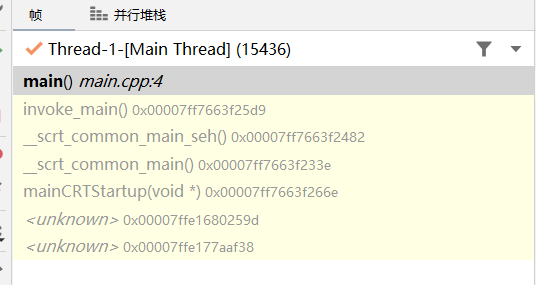
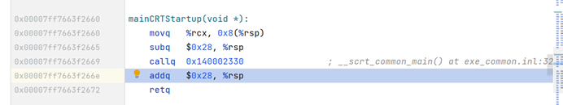
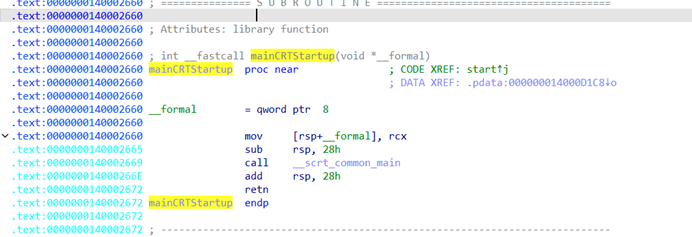
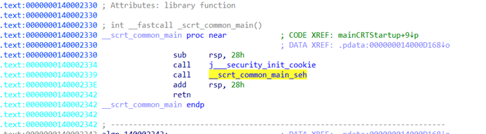
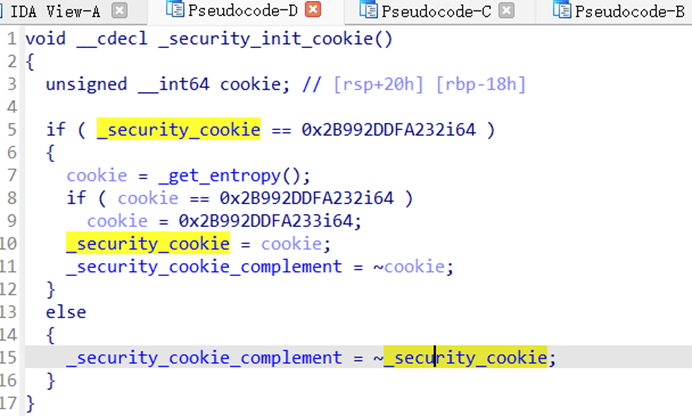
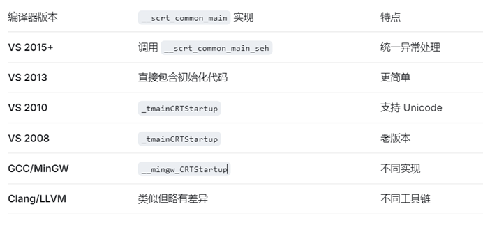
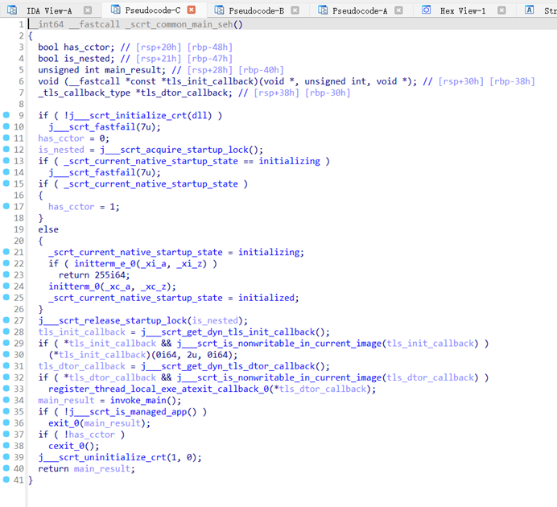
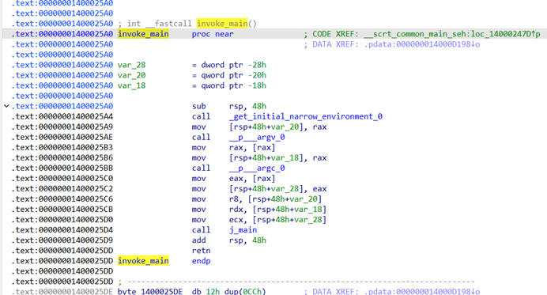
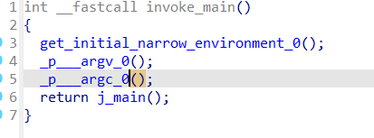

程序的真正入口
WinMain 或者 main 不是真正的入口，只是语法规定的入口。通常通过 mainCRTStartup、wWinMainCRTStartup、WinMainCRTStartup 或者 wWinMainCRTStartup。
启动函数
默认的
#include <iostream>
int main() {
std::cout << "Hello, World!" << std::endl;
return 0;
}直接使用 MSVC，我用的 tools 可能不一样，以自己的为准。
挂断点，看堆栈

我们的调用流，我反着写
main() → invoke_main() → __scrt_common_main_seh() → __scrt_common_main() → mainCRTStartup() → kernel32.dll → ntdll.dll → Windows 内核。之后我会在后续补充完整流程，这个不太支持 Windows 的编译工具。
调用的函数
invoke_main
__scrt_common_main_seh()
__scrt_common_main()
mainCRTStartup()
kernel32.dll →
@BaseThreadInitThunk@12()
ntdll.dll →
__RtlUserThreadStart()
__RtlUserThreadStart@8()详细流程
内核调度(ntdll.dll) __RtlUserThreadStart@8() 和 __RtlUserThreadStart()
→ stdcall 调用约定，初始化 TEB(Thread Environment Block)，设置 SEH(结构化异常处理) 链，
初始化浮点/向量寄存器状态，调用线程入口函数 (BaseThreadInitThunk)
→ kernel32.dll @BaseThreadInitThunk@12()
发送 DLL_THREAD_ATTACH 通知给所有已加载的 DLL，初始化线程本地存储(Thread Local Storage)，
捕获未处理的异常并上报，入口函数返回后，调用 ExitThread 清理 stdcall（由被调用者清理栈），
调用 mainCRTStartup()
→ 进入 exe mainCRTStartup()
（进程专用入口点）连接器是 *.exe 入口，控制台使用，gui 使用 winMainCRTStartup
→ __scrt_common_main()
你的可执行文件（静态链接到 CRT 库核心主逻辑），负责运行时库所有的初始化和清理
→ __scrt_common_main_seh()
(seh 异常保护壳) 用 __try/__except 包裹主流程，兜底捕获未处理的系统异常
→ invoke_main
（调用 main 的封装）统一处理参数，最终进入用户代码
→ main()详细说明
__RtlUserThreadStart()
// 原型（简化）
void RtlUserThreadStart(
PVOID StartAddress, // 线程要执行的函数地址（通常是 BaseThreadInitThunk）
PVOID Parameter // 传递给线程函数的参数
);① 初始化 TEB (Thread Environment Block)
② 设置 SEH (结构化异常处理) 链
③ 初始化浮点/向量寄存器状态
④ 调用线程入口函数 (BaseThreadInitThunk)
起始返回后调用 __RtlExitUserThread 终止线程。
BaseThreadInitThunk
参考 ReactOS
VOID NTAPI BaseThreadInitThunk(
BOOL InitialThread,
PVOID StartAddress,
PVOID Parameter)
{
// 1. 通知 DLL 新线程创建
LdrInitializeThunk(InitialThread, NULL, NULL);
// 2. 调用实际的线程入口
__try {
((VOID (WINAPI *)(PVOID))StartAddress)(Parameter);
}
__except(UnhandledExceptionFilter(GetExceptionInformation())) {
// 3. 异常处理
ExitProcess(GetExceptionCode());
}
// 4. 线程退出
ExitThread(STATUS_SUCCESS);
}用户线程最初始入口
设置初始环境（结构化异常帧）
调用 Win32 线程
mainCRTStartup

// 实际 CRT 启动代码（简化呈现）
void mainCRTStartup()
{
// ① 初始化 CRT 的全局状态
_set_app_type(_crt_console_app);
// ② 设置浮点环境
_fpreset();
// ③ 调用主初始化（含异常保护）
__scrt_common_main_seh();
// ④ 正常情况下不会执行到这里
}

具体分析就好
这里主要功能就是控制台程序的连接器入口点
操作系统加载 exe 不直接调用 main，会调用本函数。作为薄壳，交给 __scrt_common_main 处理所有初始化。
如果是 GUI 程序就调用 winMainCRTStartup，但是再底层同样会触发执行 __scrt_common_main。
__scrt_common_main


通用 CRT（堆、环境变量、安全、cookie、浮点单元）
调用 __scrt_common_main_seh 去执行受保护的程序的后续流程

cookie 是栈保护就是 canary
__scrt_common_main_seh

seh 结构化异常保护边界
结构：
__try {
// 调用全局/静态对象的构造函数
调用 invoke_main
正常退出 exit(result)
}
__except {
// 异常终止：显示错误的对话框、生成转储等内部操作
}调用 invoke_main 异常处理的最后的防线
invoke_main


给 main 的参数 envp、argc、argv 传参，调用 main 封装